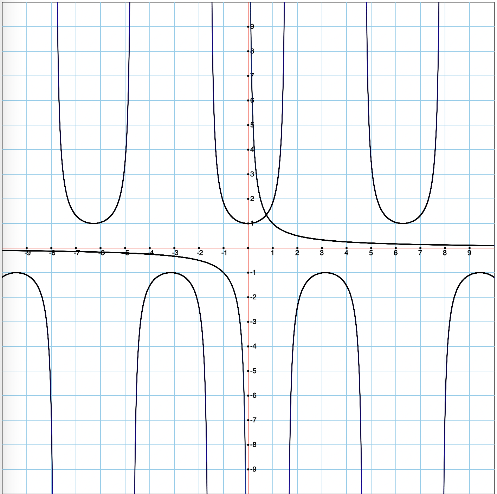
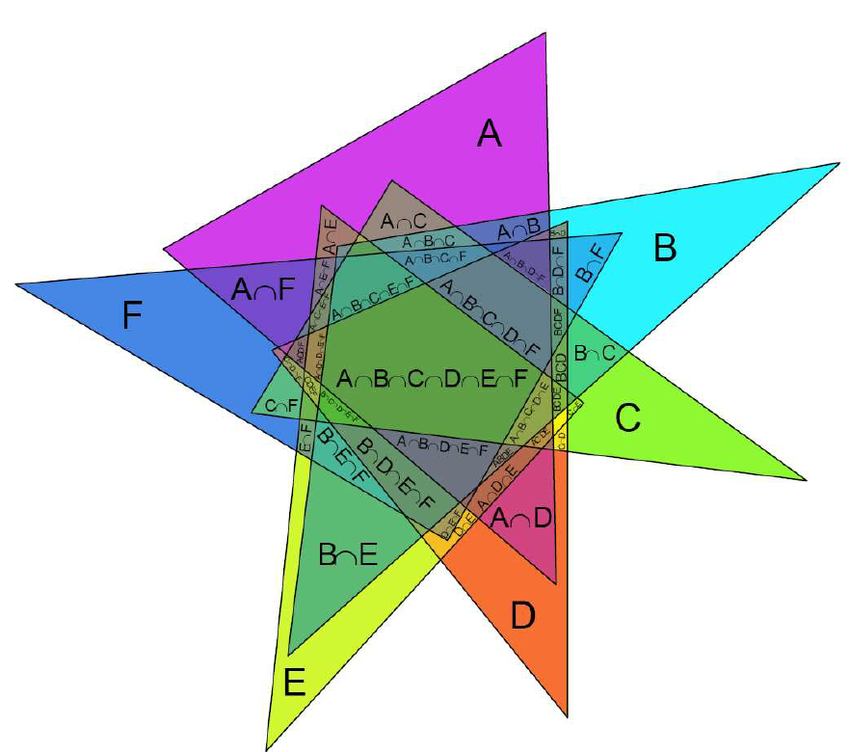

Repurpose your graph function to draw a unit circle on a set of coordinate axes with graph paper. (By “repurpose” I mean: copy your graph code to a new function called unitCircle and then modify the code.) Use a hard coded length of 4 so that we can see a little context of the coordinate plane. And use a hard-coded displaySize of 900. Then generate a random integer n in the range [5, 15] and draw n random points on your unit circle. How can you write your code so that when you “put a random point on the circle” it is equally likely to be anywhere on the circle. I.e., if you were to put a million random points they wouldn’t cluster up in any particular hot spots on the circle.
function randomPoints(options){
let scale = options.displaySize / options.length
let center = { x: options.displaySize / 2 + options.offset.x * scale, y: options.displaySize / 2 - options.offset.y * scale }
let numPoints = Math.floor(Math.random()*11+5)
for( let i = 0; i < numPoints; i ++){
let bottom = Math.random() > 0.5
let x = Math.random()*2 - 1
let y = Math.sqrt(1-x**2)
if(bottom){
y *= -1
}
x *= scale;
y *= scale;
x = center.x + x
y = center.y + y
fill("red")
circle(x, y, 8)
}
}
Graph the following three function on the same graph. Write a sentence describing what’s going on here of mathematical significance.
answer
first we graph x , b and c, they looks similar because they are inverse functions.
Easy console work:
On the same graph show (x) => Math.cos(x) and (x) => 1 / Math.cos(x). Write a sentence with some observations about this graph.
answer:
both functions have the same point (1,-1), and the maximum point of the Math.cos(x) is the minimum point of 1 / Math.cos .
What is an interesting similarity between the graph of 1 / Math.cos(x) and 1 / x? Explain why this similarity exists.
answer:
both graphics have a vertical asymptote. In case of 1/x the asymptote agree with the y axis, and for the case of 1/Math.cos(x) this one have vertical asymptote for both sides. And also both graphics extend to 1 to the infinity of positive y, and to -1 to the infinity of negative y .
Prepare 5 basic functions for a round of “guess the function,” and be prepared with ideas on how to help us figure them out in case we get stuck.
Write a function to find the longest common prefix string amongst an array of strings. If there is no common prefix, return an empty string "". Example 1: Input: strs = [“flower”, “flow”, “flight”] — Output: “fl”. Example 2: Input: strs = [“dog”, “racecar”, “car”] — Output: “”; Explanation: There is no common prefix among the input strings.
function commonPrefix(stringArray){
let prefix = "";
let string1 = stringArray[0];
let n = 0;
// here should be the for loop to get the common prefix
findPrefix:
while(true){
var checked = 0;
var char = string1[n]
for(var i=1; i < stringArray.length; i++){
var string = stringArray[i];
var same = IsTheSame(char, string[n]);
if(same){
checked++;
}else {
break findPrefix;
}
}
if(checked == stringArray.length-1 && !prefix.includes(string[n])){
prefix += string1[n];
}else {
break;
}
n++;
}
return prefix;
}
function IsTheSame(target, char){
if(char == target){
return true;
}
return false;
} Please give a brief update on Screepslandia.
answer:
i am getting one room else, and my control room level of my main room, is in level 7 now!!.
A palindromic number reads the same both ways. The largest palindrome made from the product of two 2-digit numbers is 9009 = 91 × 99. Find the largest palindrome made from the product of two 3-digit numbers.
answer:
906609 = 913 x 993
Play around with Math.atan. What’s the biggest possible value you can get? What’s the smallest possible value you can get?
answer:
the gratest value of Math.atan that i found is 1.5707963267948966, and also the smallest value is the same number(1.5707963267948966) just that in this case it would be negative -1.5707963267948966.
Consider the gamma function attached to this homework thread. Write two or three sentences with observations about the code, but specifically don’t actually run the code. Any ideas as to what this thing does?
function gamma(x) {
var p = [0.99999999999980993, 676.5203681218851, -1259.1392167224028,
771.32342877765313, -176.61502916214059, 12.507343278686905,
-0.13857109526572012, 9.9843695780195716e-6, 1.5056327351493116e-7
];
var g = 7;
if (x < 0.5) {
return Math.PI / (Math.sin(Math.PI * x) * gamma(1 - x));
}
x -= 1;
var a = p[0];
var t = x + g + 0.5;
for (var i = 1; i < p.length; i++) {
a += p[i] / (x + i);
}
return Math.sqrt(2 * Math.PI) * Math.pow(t, x + 0.5) * Math.exp(-t) * a;
}
answer:
i see that in the gamma function we use recursion
Read this article: Conjetura_de_Collatz -- write a brief but precise description explaining: What is the Collatz Conjecture?
answer:
the objective is down a number to 1 , so if there is an even number you divide it by 2, and if it’s an odd number you multiply the number to 3 and add 1 to the result.
Design an algorithm then write a function collatzProof(num) that will prove the Collatz Conjecture for the integers from 1 through num. Here's a helper question: What might the output of collatzProof(4) look like?
function collatzProof(n){
let results = [];
for(let i=1; i<=n; i++){
let r = collatzNum(i);
results.push(r);
}
return results;
}
function collatzNum(n){
let seq = [];
seq.push(n);
let f;
let r = n;
while(r != 1){
if(r%2 == 0){
f = (n) => n/2;
}
else{
f = (n) => 3*n + 1;
}
r = f(r);
seq.push(r);
}
return seq;
}
Using mental math only: What is 15 squared? Do not check your answer, unless you check it mentally. In fact, don’t write your answer down, just remember it. Write a sentence describing how difficult this exercise was to do.
answer:
for me, it was easy, this time i didn’t make the same mistake.
In the image below, what is the meaning of A ∩ B ∩ C ∩ D ∩ E ∩ F in the center of the diagram? In particular, what does that ∩ symbol mean? Please give a clear written explanation. By the way, this is an example of a Venn Diagram.
answer:
is the figure that the triangles A,B,C,D,E,F make when they intercept each other. and the ∩ is the sign of the intersection